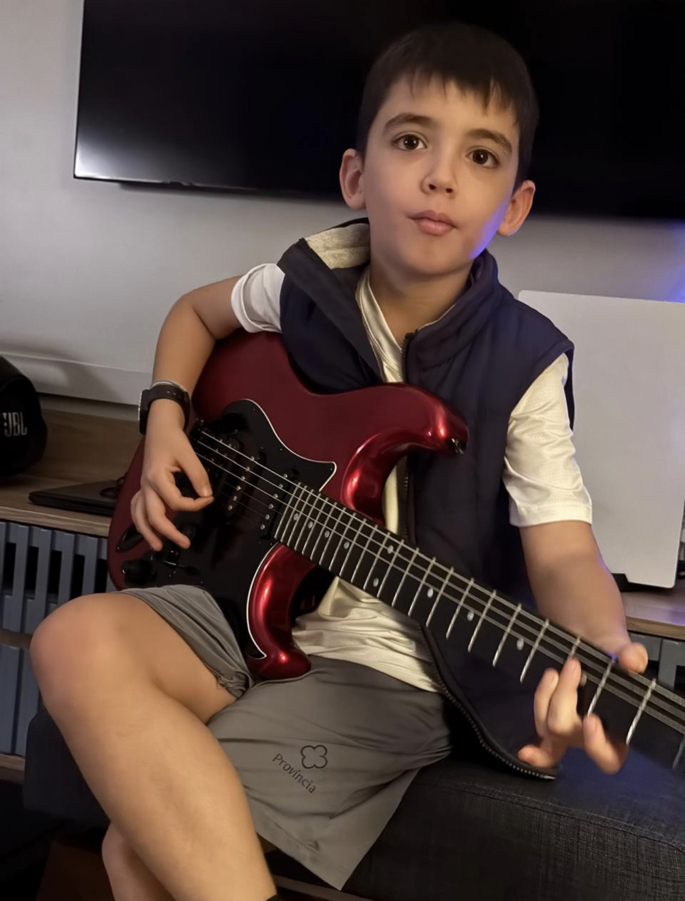
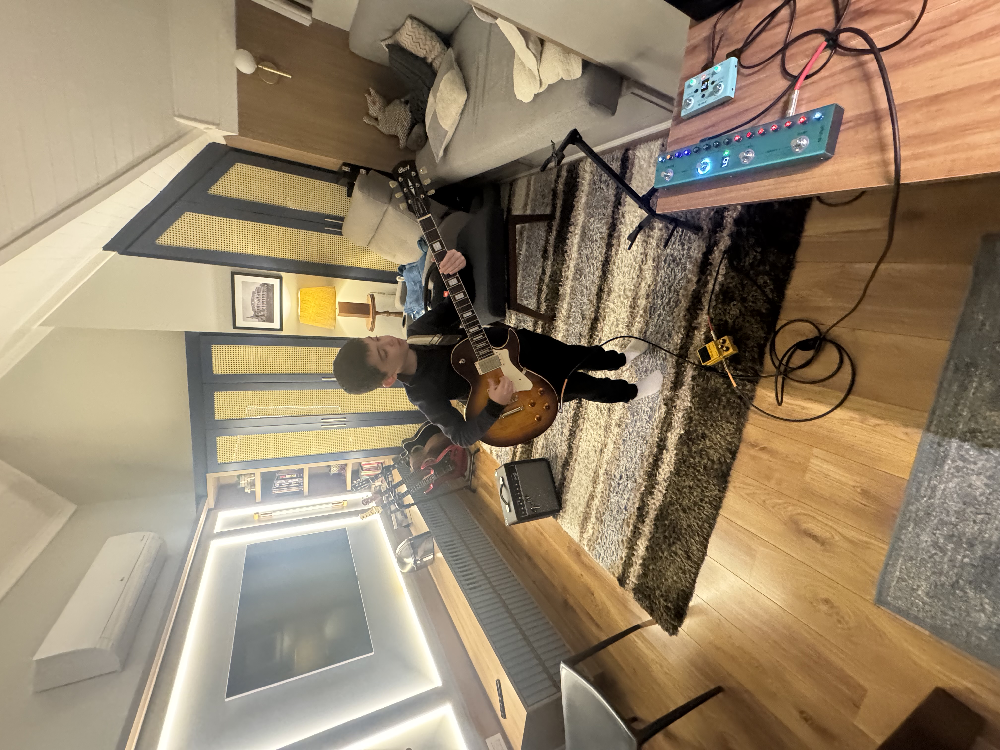

Luca Rock n' Roll Setups



Oasis
Wall of Sound / Britpop (Supersonic, Acquiesce, Wonderwall)
🎸 Guitarra -> Pure Sky -> OD-3 -> Tank-G -> Joyo EQ -> Mini Universe -> Lost Tempo -> MR4 🔊
📖 Tablatura: Cigarettes & Alcohol (Songsterr)
📖 Tablatura: Supersonic (Songsterr)
📖 Tablatura: Supersonic (CifraClub)
📖 Tablatura: Wonderwall (Songsterr)
📖 Tablatura: Wonderwall (CifraClub)
📖 Tablatura: Acquiesce (Songsterr)
📖 Tablatura: Acquiesce (CifraClub)
Guitarra Cort
- Captador: Ponte
- Volume: 10
- Tone: 10
Caline Pure Sky
Sempre Ligado (Filtro e Empurrão)- Volume: 6
- Gain: 2
- Treble: 7
- Bass: 4
Boss OD-3
Sempre Ligado (Distorção Principal)- Drive: 5.5
- Tone: 6
- Level: 6
M-Vave Tank-G
- AMP: Slot 5 (Plexi 100)
- Gain: 3.5 | Treble: 6 | Middle: 8.5 | Bass: 4.5
- CAB: Slot 7 (Marshall 1960)
- Delay: Analog (Slapback, DLY Time 9h)
- Reverb / Modulação: Desligados
Joyo R12 EQ (10-Band)
Esculpir médios agressivos| Freq | 31.2 | 62.5 | 125 | 250 | 500 |
|---|---|---|---|---|---|
| dB | -4 | -4 | -2 | -2 | 0 |
| Freq | 1K | 2K | 4K | 8K | 16K |
| dB | +3 | +3 | +2 | 0 | -2 |
M-Vave Mini Universe
- Modo: SPRING ou ROOM
- Mix: 3.5
- Decay: 3
- Parameter: 6
Lost Tempo V2
- Ritmo: d21 ou d22 (Rock)
- BPM: 104 (Supersonic) / 118 (Cigarettes) / 128 (Acquiesce)
Led Zeppelin
Led Zeppelin IV Definitive (Black Dog, Rock and Roll)
🎸 Guitarra -> Pure Sky -> OD-3 -> Tank-G -> Joyo EQ -> Mini Universe -> Lost Tempo -> MR4 🔊
📖 Tablatura: Black Dog (Songsterr)
📖 Tablatura: Rock n' Roll (Songsterr)
Guitarra Cort
- Captador: Ponte
- Volume: 10
- Tone: 8
Caline Pure Sky
Sempre Ligado (Brilho e Dinâmica)- Volume: 5
- Gain: 2
- Treble: 6
- Bass: 4
Boss OD-3
Apenas para o Solo (Boost/Sustain)- Drive: 3
- Tone: 6
- Level: 7
M-Vave Tank-G
- AMP: Slot 5 (Plexi 100)
- Gain: 5.5 | Treble: 5.5 | Middle: 6.5 | Bass: 5
- CAB: Slot 7 (Marshall 1960)
- Efeitos Internos: Desligados
Joyo R12 EQ (10-Band)
Enxugar graves e destacar médios-altos| Freq | 31.2 | 62.5 | 125 | 250 | 500 |
|---|---|---|---|---|---|
| dB | -5 | -5 | -2 | -2 | 0 |
| Freq | 1K | 2K | 4K | 8K | 16K |
| dB | +2 | +4.5 | +4.5 | +1 | -3 |
M-Vave Mini Universe
- Modo: PLATE ou ROOM
- Mix: 4
- Decay: 4
- Parameter: 6
Lost Tempo V2
- Ritmo: d21 ou d22 (Rock)
- BPM: 170 (Rock and Roll)
Led Zeppelin
No Quarter (Submerso / Psicodélico)
🎸 Guitarra -> Pure Sky -> OD-3 -> Tank-G -> Joyo EQ -> Mini Universe -> Lost Tempo -> MR4 🔊
📖 Tablatura: No Quarter (Songsterr)
Guitarra Cort
- Captador: Braço (Neck) ou Meio
- Volume: 8
- Tone: 5.5
Caline Pure Sky
Sempre Ligado (Base Limpa)- Volume: 5
- Gain: 1
- Treble: 4
- Bass: 5
Boss OD-3
Apenas para o Solo Pesado (Fuzz)- Drive: 6
- Tone: 4
- Level: 7
M-Vave Tank-G
- AMP: Slot 4 (Marshall JTM45 OD)
- Gain: 3.5 | Treble: 4 | Middle: 6 | Bass: 6
- CAB: Slot 7 (Marshall 1960)
- Modulação: Phaser (MOD SPEED entre 10h e 11h)
Joyo R12 EQ (10-Band)
Fechar os agudos e aquecer os graves| Freq | 31.2 | 62.5 | 125 | 250 | 500 |
|---|---|---|---|---|---|
| dB | -3 | -3 | +3 | +3 | +2 |
| Freq | 1K | 2K | 4K | 8K | 16K |
| dB | 0 | 0 | -4 | -4 | -5 |
M-Vave Mini Universe
- Modo: CLOUD ou HALL
- Mix: 5
- Decay: 6.5
- Parameter: 3.5
Lost Tempo V2
- Ritmo: d21 ou d22 (Rock)
- BPM: 70 a 72
Led Zeppelin II
Saturação Quente / Fuzz-like (Whole Lotta Love, Heartbreaker)
🎸 Guitarra -> Pure Sky -> OD-3 -> Tank-G -> Joyo EQ -> Mini Universe -> Lost Tempo -> MR4 🔊
📖 Tablatura: Whole Lotta Love (Songsterr)
📖 Tablatura: Heartbreaker (Songsterr)
Guitarra Cort
- Captador: Ponte
- Volume: 10
- Tone: 8
Caline Pure Sky
Sempre Ligado (Filtro)- Volume: 5 | Gain: 2
- Treble: 6 | Bass: 4
Boss OD-3
Saturação Principal (Fuzz Vibe)- Drive: 6.5 | Tone: 5 | Level: 6
M-Vave Tank-G
- AMP: Slot 5 (Plexi 100)
- Gain: 4 | Treble: 5 | Middle: 7.5 | Bass: 5
- CAB: Slot 7 (Marshall 1960)
- Efeitos: Desligados
Joyo R12 EQ (10-Band)
Aquecer os médios e domar agudos| Freq | 31.2 | 62.5 | 125 | 250 | 500 |
|---|---|---|---|---|---|
| dB | -3 | -3 | +2 | +2 | +1 |
| Freq | 1K | 2K | 4K | 8K | 16K |
| dB | +2 | +1 | -1 | -2 | -3 |
Ambiência & Loop
- Mini Universe: ROOM | Mix 3 | Decay 3 | Param 5
- Lost Tempo: d21 (Rock) a 90 BPM
Led Zeppelin (Jangly)
Houses of the Holy (The Song Remains The Same, Over the Hills, The Ocean)
🎸 Guitarra -> Pure Sky -> OD-3 -> Tank-G -> Joyo EQ -> Mini Universe -> Lost Tempo -> MR4 🔊
📖 Tablatura: Houses of the Holy (Songsterr)
📖 Tablatura: The Song Remains the Same (Songsterr)
📖 Tablatura: Over the Hills and Faraway (Songsterr)
📖 Tablatura: The Ocean (CifraClub)
📖 Tablatura: The Ocean (CifraClub)
Guitarra Cort
- Captador: Meio (Ponte + Braço)
- Volume: 10 | Tone: 10
Caline Pure Sky
Boost de Brilho Cristalino- Volume: 6 | Gain: 1
- Treble: 8 | Bass: 4
Boss OD-3
Desligado (Apenas solos)- Drive: 3 | Tone: 6 | Level: 7
M-Vave Tank-G
- AMP: Slot 4 (JTM45 OD)
- Gain: 2.5 | Treble: 7 | Middle: 5 | Bass: 5
- CAB: Slot 7 (Marshall 1960)
- Modulação: CHORUS (Velocidade baixa, Profundidade média)
Joyo R12 EQ (10-Band)
Simular ataque de 12 cordas| Freq | 31.2 | 62.5 | 125 | 250 | 500 |
|---|---|---|---|---|---|
| dB | -5 | -4 | -2 | -1 | 0 |
| Freq | 1K | 2K | 4K | 8K | 16K |
| dB | +2 | +3 | +5 | +4 | -1 |
Ambiência & Loop
- Mini Universe: SPRING | Mix 4 | Decay 4 | Param 6
- Lost Tempo: d22 (Rock) a 130 BPM
Led Zeppelin (Physical Graffiti)
Épico e Espacial (Kashmir, The Rover)
🎸 Guitarra -> Pure Sky -> OD-3 -> Tank-G -> Joyo EQ -> Mini Universe -> Lost Tempo -> MR4 🔊
📖 Tablatura: The Rover (Songsterr)
📖 Tablatura: Kashmir - DADGAD (Songsterr)
📖 Tablatura: Kashmir - EBGDAE (Songsterr)
Guitarra Cort
- Captador: Meio (Kashmir) ou Ponte
- Volume: 10 | Tone: 8
Caline Pure Sky
Sempre Ligado (Empurrão Médio)- Volume: 5 | Gain: 3
- Treble: 6 | Bass: 4
Boss OD-3
Saturação da Base- Drive: 5 | Tone: 6 | Level: 6
M-Vave Tank-G
- AMP: Slot 5 (Plexi 100)
- Gain: 5 | Treble: 6 | Middle: 7 | Bass: 5
- CAB: Slot 7 (Marshall 1960)
- Modulação: PHASER (Velocidade muito lenta - 9h)
Joyo R12 EQ (10-Band)
Ressonância para Afinação Alternativa| Freq | 31.2 | 62.5 | 125 | 250 | 500 |
|---|---|---|---|---|---|
| dB | -2 | -2 | +3 | +1 | 0 |
| Freq | 1K | 2K | 4K | 8K | 16K |
| dB | +3 | +2 | 0 | 0 | -3 |
Ambiência & Loop
- Mini Universe: HALL ou PLATE | Mix 4 | Decay 5 | Param 5
- Lost Tempo: d21 (Rock) a 82 BPM
Led Zeppelin III (Clean)
Limpo Cristalino (Since I've Been Loving You, Tangerine)
🎸 Guitarra -> Pure Sky -> OD-3 -> Tank-G -> Joyo EQ -> Mini Universe -> Lost Tempo -> MR4 🔊
Guitarra Cort
- Captador: Braço (Neck)
- Volume: 7 (Limpar a saída)
- Tone: 8
Caline Pure Sky
Sempre Ligado (Textura Clean)- Volume: 5 | Gain: 1
- Treble: 6 | Bass: 5
Boss OD-3
Desligado (Só ligue no solo rasgado)- Drive: 5 | Tone: 6 | Level: 7
M-Vave Tank-G
- AMP: Slot 1 (Fender 65 Twin)
- Gain: 3 | Treble: 7 | Middle: 5 | Bass: 5
- CAB: Slot 1 (Fender 2x12)
- Efeitos: Desligados
Joyo R12 EQ (10-Band)
Scoop de médios (Vibe Fender)| Freq | 31.2 | 62.5 | 125 | 250 | 500 |
|---|---|---|---|---|---|
| dB | -2 | -1 | 0 | 0 | -2 |
| Freq | 1K | 2K | 4K | 8K | 16K |
| dB | 0 | +2 | +3 | +1 | -2 |
Ambiência & Loop
- Mini Universe: SPRING | Mix 4.5 | Decay 4 | Param 6
- Lost Tempo: d23 (Jazz/Blues) a 44 BPM
AC/DC
Punch e Crunch Seco (Back in Black, Highway to Hell)
🎸 Guitarra -> Pure Sky -> OD-3 -> Tank-G -> Joyo EQ -> Mini Universe -> Lost Tempo -> MR4 🔊
📖 Tablatura: Back in Black (Songsterr)
📖 Tablatura: It's A Long Way To The Top (If You Wanna Rock 'N Roll) (Songsterr)
📖 Tablatura: It's A Long Way To The Top (If You Wanna Rock 'N Roll) (Cifra Club)
📖 Tablatura: TNT (Songsterr)
Guitarra Cort
- Captador: Ponte (Obrigatório)
- Volume: 10 | Tone: 10
Caline Pure Sky
Sempre Ligado (Ataque da Palheta)- Volume: 6 | Gain: 1.5
- Treble: 7 | Bass: 4
Boss OD-3
Sempre Ligado (Crunch)- Drive: 4 (Não exagere no ganho!)
- Tone: 6 | Level: 6
M-Vave Tank-G
- AMP: Slot 5 (Plexi 100)
- Gain: 4.5 | Treble: 6 | Middle: 7 | Bass: 4
- CAB: Slot 7 (Marshall 1960)
- Efeitos: Todos Desligados
Joyo R12 EQ (10-Band)
Bater no peito: Graves secos e médios explosivos| Freq | 31.2 | 62.5 | 125 | 250 | 500 |
|---|---|---|---|---|---|
| dB | -5 | -4 | -2 | 0 | +1 |
| Freq | 1K | 2K | 4K | 8K | 16K |
| dB | +2 | +4 | +3 | +1 | -3 |
Ambiência & Loop
- Mini Universe: ROOM | Mix 2 (Quase seco) | Decay 2 | Param 5
- Lost Tempo: d22 (Rock) a 92 BPM
Jimi Hendrix
Stratocaster Mágica / Fuzz & Vibe (Voodoo Child, Little Wing, Purple Haze)
🎸 Tagima Sixmart -> Pure Sky -> OD-3 -> Tank-G -> Joyo EQ -> Mini Universe -> Lost Tempo -> MR4 🔊
📖 Tablatura: Hey Joe (Songsterr)
📖 Tablatura: Vodoo Child (Songsterr)
Tagima Sixmart (Single Coils)
- Captador: Braço (Little Wing) ou Ponte (Voodoo Child)
- Volume: 9 (Hendrix limpava o som no volume)
- Tone: 10
Caline Pure Sky
Sempre Ligado (Engordar o Single Coil)- Volume: 6.5 | Gain: 3
- Treble: 5 (Controlado) | Bass: 6 (Para dar corpo)
Boss OD-3
Simulando o Fuzz Face- Drive: 7.5 (Ganho alto)
- Tone: 4 (Abaixe para simular o calor do Fuzz)
- Level: 6
M-Vave Tank-G
- AMP: Slot 5 (Plexi 100)
- Gain: 6 | Treble: 6 | Middle: 6 | Bass: 5
- CAB: Slot 7 (Marshall 1960)
- Modulação: PHASER (Simulando Univibe - Speed em 12h)
Joyo R12 EQ (10-Band)
Corpo de Stratocaster e Corte de Chiado| Freq | 31.2 | 62.5 | 125 | 250 | 500 |
|---|---|---|---|---|---|
| dB | -3 | -2 | +3 | +2 | +1 |
| Freq | 1K | 2K | 4K | 8K | 16K |
| dB | +2 | +3 | +1 | -2 | -4 |
Ambiência & Loop
- Mini Universe: SPRING (Mola Clássica) | Mix 4 | Decay 4 | Param 5
- Lost Tempo: d23 (Blues/Shuffle) a 85 BPM
Pink Floyd
Comfortably Numb (Solos Épicos / Big Muff + Delay Vibe)
🎸 Tagima Sixmart -> Pure Sky -> OD-3 -> Tank-G -> Joyo EQ -> Mini Universe -> Lost Tempo -> MR4 🔊
📖 Tablatura: Comfortably Numb (Pulse 1994) (Songsterr)
📖 Tablatura: Comfortably Numb (Songsterr)
Tagima Sixmart (Single Coils)
- Captador: Braço (1º Solo - Lírico) / Ponte (2º Solo - Agressivo)
- Volume: 10
- Tone: 10 (Se usar a ponte, abaixe para 7 para tirar a estridência)
Caline Pure Sky
Sempre Ligado (Empurrão de Sustain)- Volume: 7 (Alto para empurrar o Boss)
- Gain: 3
- Treble: 6 | Bass: 5
Boss OD-3
Simulando o Fuzz/Big Muff- Drive: 8 (Ganho altíssimo)
- Tone: 3.5 (Bem fechado para o som ficar aveludado e não "abelhudo")
- Level: 6.5
M-Vave Tank-G
- AMP: Slot 2 (Fender 65 Twin Reverb) - Base ultra limpa
- Gain: 3 | Treble: 6 | Middle: 5 | Bass: 6
- CAB: Slot 7 (Marshall 1960V30)
- Delay: ANALOG (Ajuste o DLY TIME para 12h/1h - cerca de 400ms, com 3 ou 4 repetições)
- Modulação: CHORUS (Bem sutil, Mix/Depth baixos)
Joyo R12 EQ (10-Band)
O "Sorriso Gilmour" (Graves e Agudos limpos)| Freq | 31.2 | 62.5 | 125 | 250 | 500 |
|---|---|---|---|---|---|
| dB | -2 | -2 | +2 | +1 | -2 |
| Freq | 1K | 2K | 4K | 8K | 16K |
| dB | 0 | +2 | +3 | +1 | -3 |
Ambiência & Loop
- Mini Universe: PLATE ou HALL (Espaço gigante) | Mix 4.5 | Decay 5.5 | Param 5
- Lost Tempo: d21 ou d22 (Balada) a 63 BPM